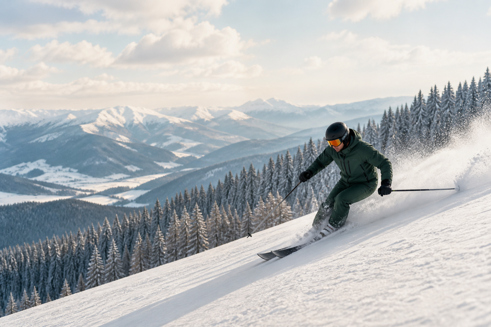

Schi la Pârtia Aluniș
O zi de schi cu priveliști montane, la mică distanță de Sovata.

O zi pe pârtie.
O seară în liniște.
Împrejurimi
Începe ziua cu zăpadă, aer de munte și mișcare. La final, Vila Silvia rămâne locul cald în care ritmul se așază din nou.
O zi de schi cu priveliști montane, la mică distanță de Sovata.
Bucuria simplă a iernii, pentru familii și pentru cei care vor să se lase purtați de zăpadă.
Poteci liniștite, brazi și aer rece de munte pentru o zi în propriul ritm.
O idee de excursie pentru o zi de iarnă, la o distanță potrivită pentru o escapadă.